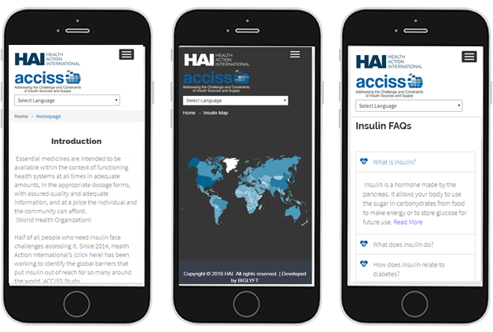
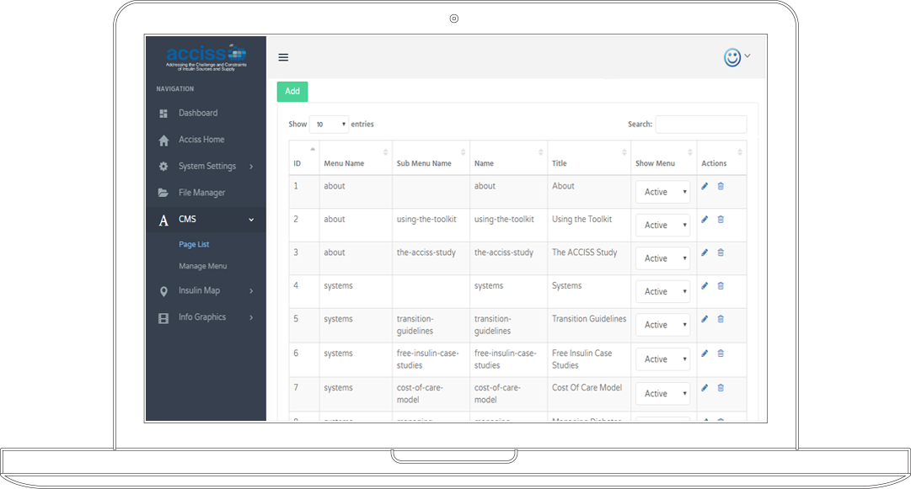
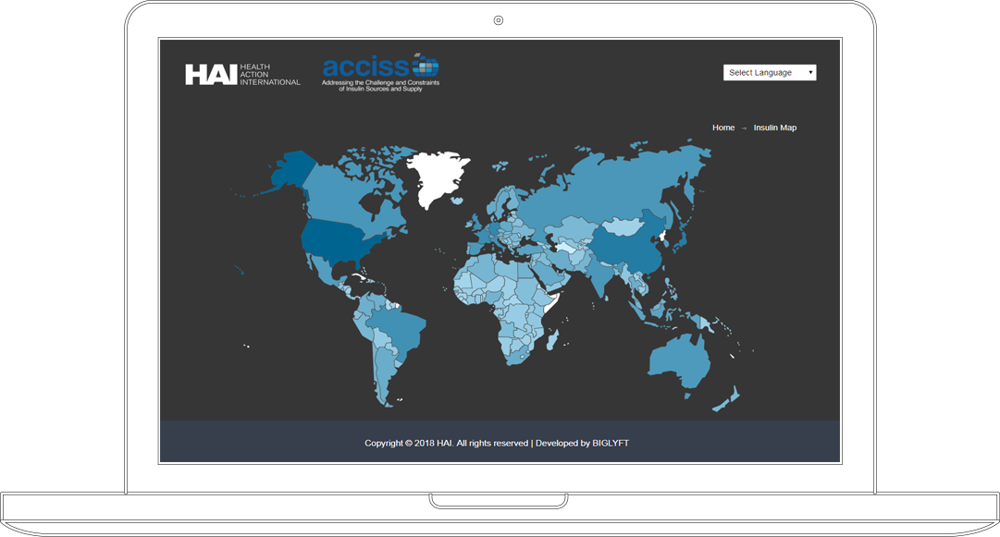
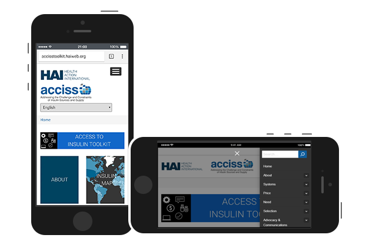
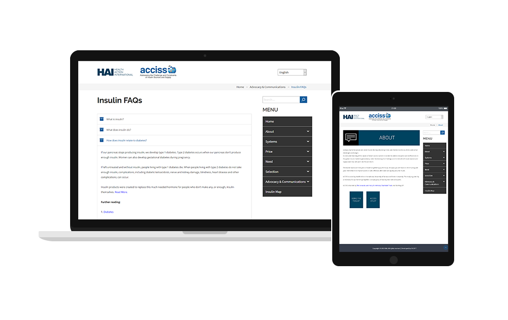

ACCISS Toolkit, part of Health Action International having it's office in Amsterdam, is a first of its kind online platform in the World that presents a variety of information and tools that address the barriers to insulin access in a user friendly way

About 100 million people worldwide need insulin to manage their diabetes and live healthier, longer lives. However, it is estimated that 1 in 2 of these people have problems accessing and/or affording this important medicine. To address inequities and inefficiencies in the global insulin market, identification of what is causing barriers to accessing insulin is needed.
The "Addressing the Challenge and Constraints of Insulin Sources and Supply (ACCISS)" Study sets out to do this.
The company conducted a three-year study in three phases -
Phase 1: Mapping the insulin market from different angles
Phase 2: Understanding who produces insulin and challenges in the distribution channel
Phase 3: Developing interventions to improve access to insulin

Our objective was to build an online tool that synthesizes the information from the ACCISS study making it presentable and practical for a diverse worldwide audience.

The task was primarily focused on creating the back end of the platform, and a basic design for the front end of the toolbox. It is focused on being user-friendly: both for the end user across multiple countries and bandwidths, as well as for the staff who will be tasked with uploading new data and factsheets to the platform, especially as this will be a living toolbox with new tools being uploaded on an ongoing basis.
The main challenges includes the following -
1). A custom made Back-end with CMS and features to manage the entire toolkit.
2). An interactive World map to present country specific statistics on price, number of insulin users and a variety of other fields, based on data feed from back-end. All data generated from the interactive Map are download and print ready.
3). Multi-language support including English, Spanish, Russian, French, Chinese & Arabic.
4). A data driven platform, have the functionality of a data aggregator that takes the bits of data and reports, and combines them (or pull specific data) to generate output.
Timeline for the project was set to 4 months from agreement to Final pilot launch.


PHP with LARAVEL Framework
JAVASCRIPT
JQUERY
AJAX
HTML
CSS

We systematically broke down the project into several milestones. Each milestone was executed and reviewed separately and client feedback was taken immediately so as to align the milestone exactly to client’s vision. Any changes or required improvements were implemented before starting the next milestone. We provided the client with access to our development server from time to time so that the client knew exactly what’s going on.
Overall the project was broken down to the following milestones –
1). Planning
2). Frontend Design
3). Backend Design
4). Database Integration
5). Interactive Map Design
6). Development of Content Management System
On project delivery Client was provided with a step-by-step User Guide to manage the entire toolkit from the backend. We also provided a training session to the client.
After project delivery we provided a buffer period to our client within which we supported client’s request free of cost.

"We asked BIGLYFT to build an online toolkit for us. BIGLYFT was receptive and flexible to our needs and met all of our deadlines in a timely fashion. They went above and beyond to ensure we were happy with our final product."
- Molly Lepeska, Project Manager (Health Action International) -